Analysis based on 1655 records from January 01, 2020 to August 28, 2026
Last updated on August 29, 2026
| 5 Days | 15 Days | 50 Days | 200 Days | 1000 Days | |
|---|---|---|---|---|---|
| Start Date | August 24, 2026 | August 10, 2026 | June 19, 2026 | November 10, 2025 | August 18, 2022 |
| Net Return | -1.26% | -7.03% | -8.64% | -34.17% | -14.89% |
| Average Daily Return | -0.254% | -0.484% | -0.181% | -0.209% | -0.016% |
| Median Close Price | 269.70 | 271.40 | 281.90 | 306.40 | 415.35 |
| Lowest Close Price | 266.00 | 266.00 | 266.00 | 266.00 | 266.00 |
| Highest Close Price | 271.40 | 282.65 | 292.50 | 408.15 | 522.75 |
| Mean Value Traded | 2.83B | 3.34B | 3.94B | 6.29B | 5.94B |
Last close price: 266.0
Average of last 15 days: 272.80
Average of last 50 days: 281.49
Average of last 200 days: 319.93
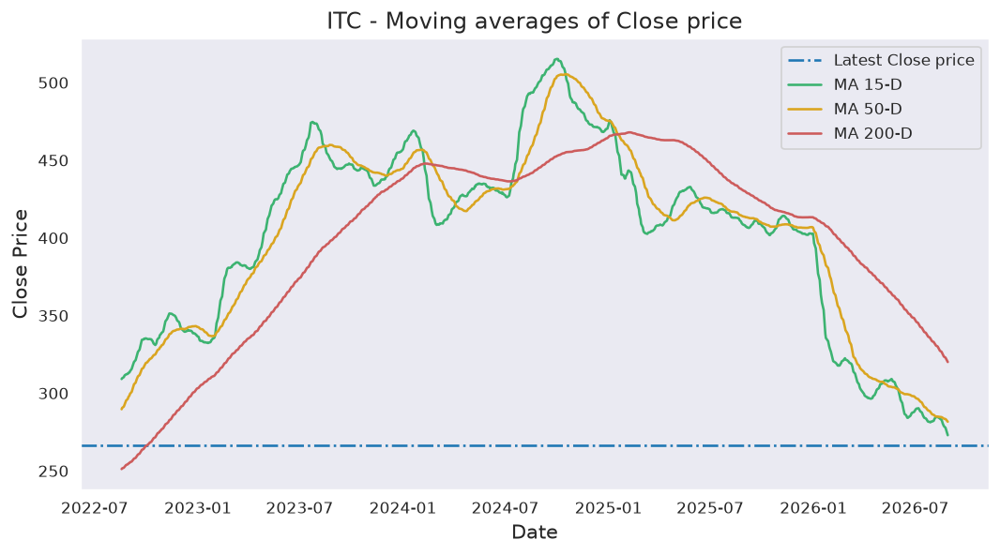
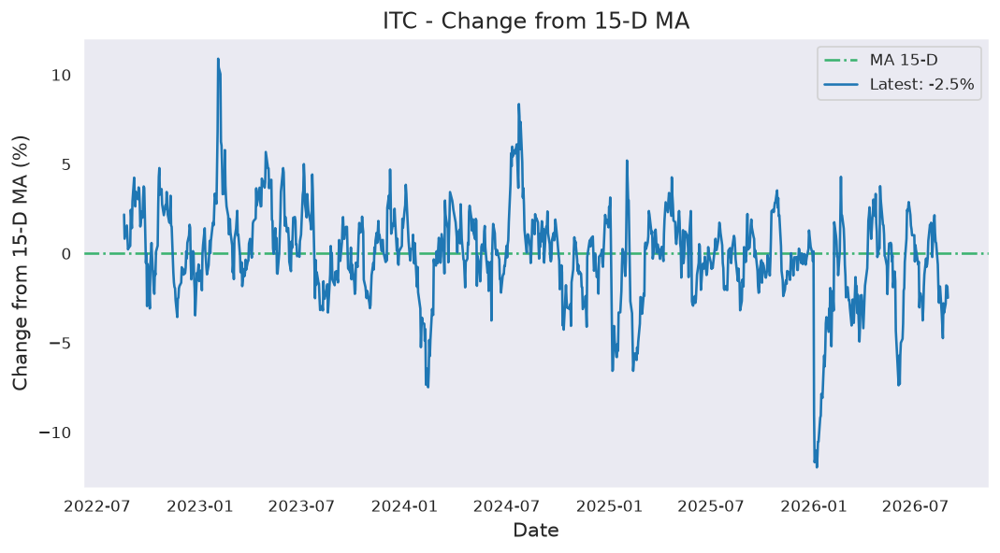
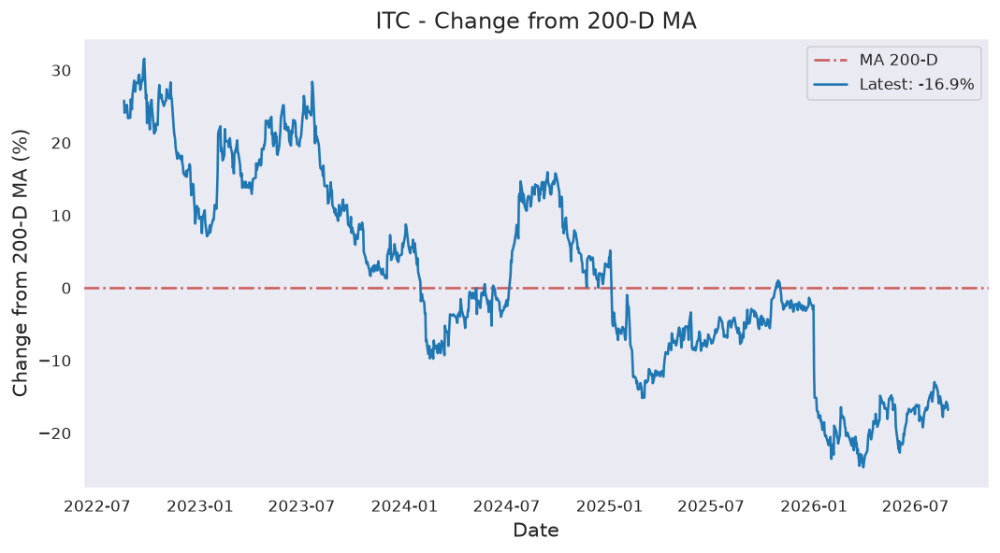
ITC first closed above its last close price on Friday, April 08, 2022 which was 1604 days ago.
Since then, it has closed over this price 97.3% of times which is 1060 trading days.
Previously, ITC closed above its last close price on Thursday, August 27, 2026 which was 2 days ago.
Historically, this stock gave a non-positive return for a maximum period of 1603 days which was from April 08, 2022 to August 28, 2026.
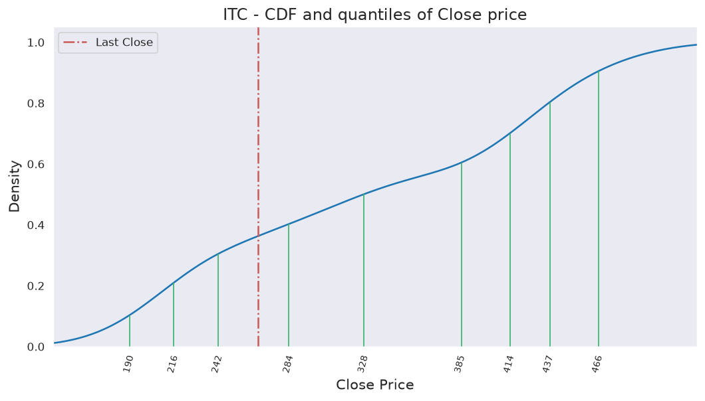
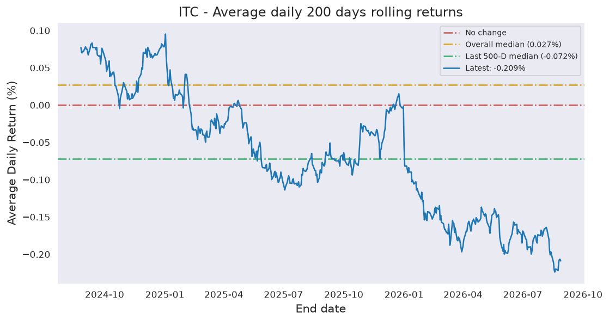
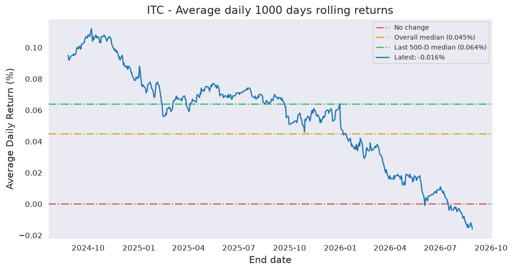
Last candle: Red (-1.12%)
Overall percentage of Red candles: 50.5%
Current streak of Red candles: 3
Net change so far for the current streak: -1.99%
Probability of streak continuing: 55.9%
Longest streak of Red candles: 7 trading days from January 01, 2026 to January 09, 2026
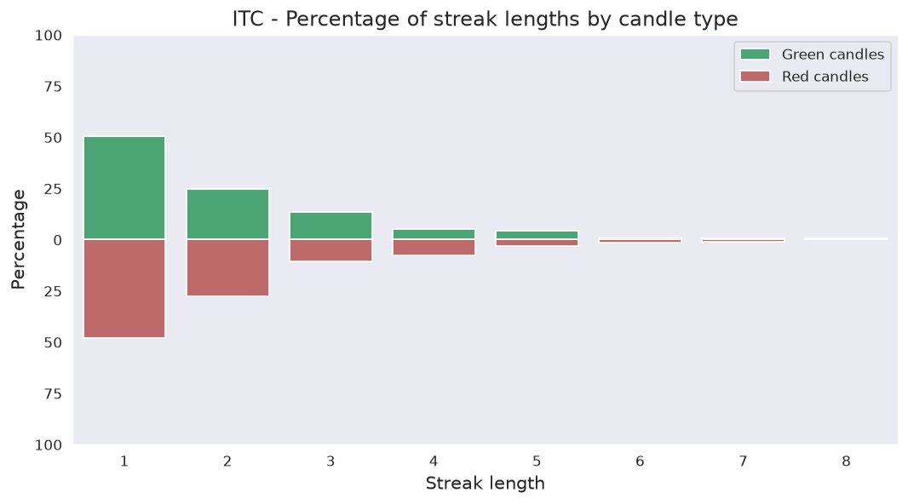
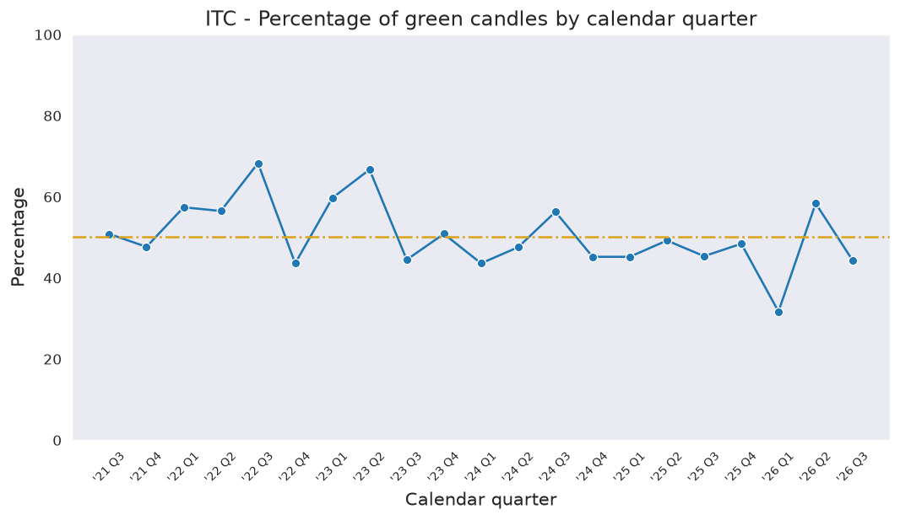
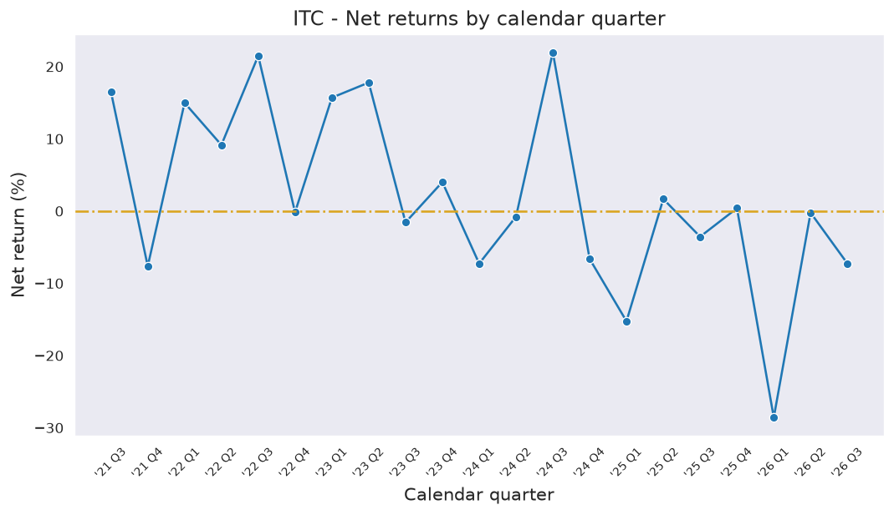
Current down from ATH: -49.11%
Most down from ATH: -49.11%
ATH hits in last 1000 days: 63
ATH was last hit on Thursday, September 26, 2024.
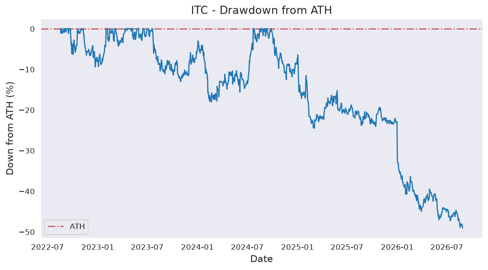
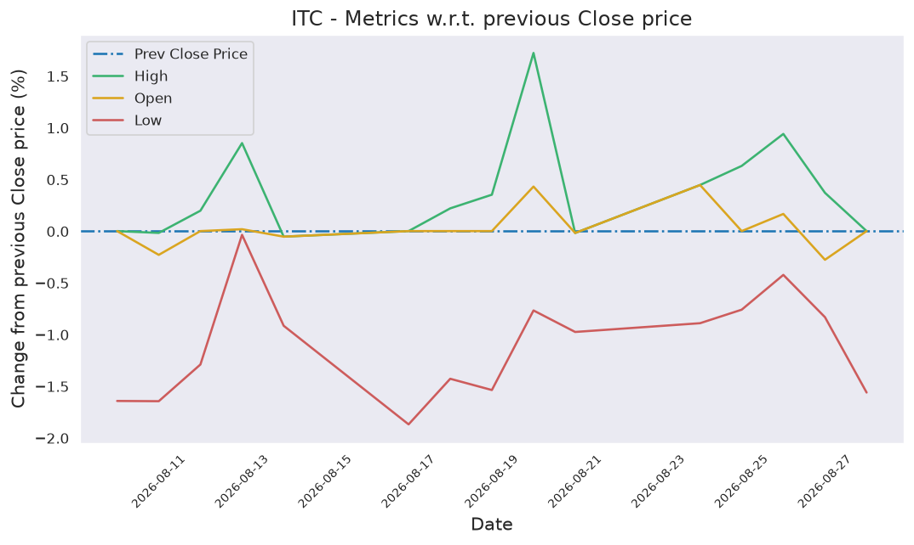
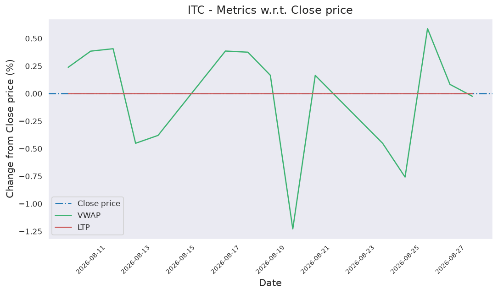
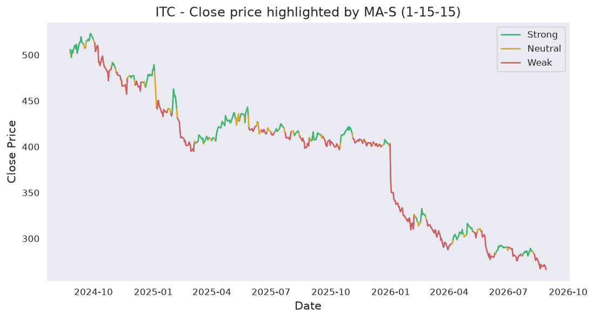
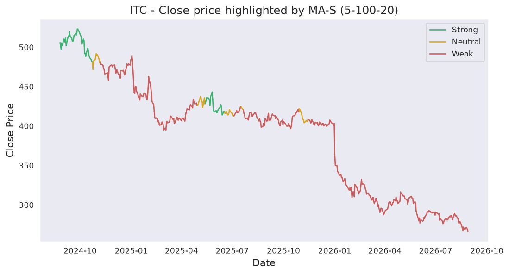